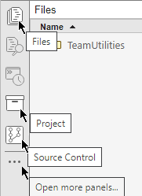

Collaborate Using Git in MATLAB
You can use Git™ source control in MATLAB® to manage your files and collaborate with others. Using Git, you can track changes to your files and recall specific versions later. From the MATLAB Files and Project panels, you can clone an existing remote repository, add files to the local repository, commit changes, and push and pull changes to and from the remote repository.
After you clone a remote Git repository, you can use the Source Control panel to work with and manage multiple repositories at the same time.

To work with files in a remote repository, follow these steps:
Pull the latest changes from the remote repository.
Edit the existing files in your working folder.
Mark new files for addition to the local repository.
Review the changes.
Commit the modified files to the local repository.
Push changes to the remote repository.

Alternatively, to track changes to your files without sharing with others, you can create a local Git repository that is not synced with a remote repository. You follow similar steps when working with a local repository that is not synced with a remote repository, but you omit the Pull and Push steps. For more information, see Track Work Locally with Git in MATLAB.
Note
Before using Git in MATLAB, set up your system to avoid binary file corruption. For more information, see Set Up Git Source Control.
To collaborate with others using Git in MATLAB, follow the instructions in these examples:
Use the files provided within each example to follow the instructions.